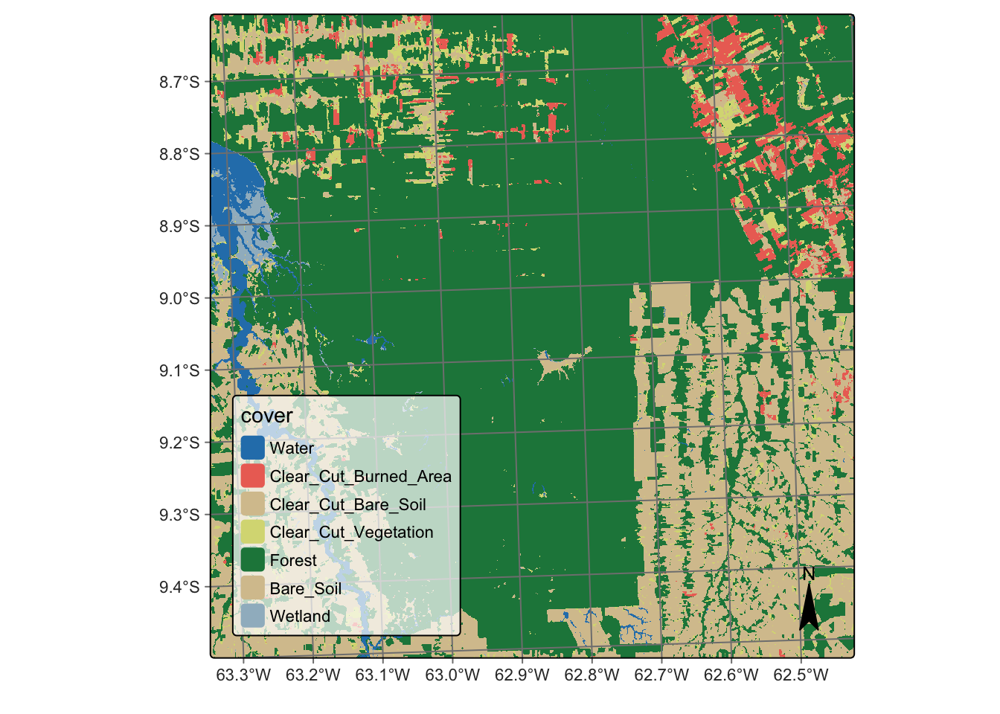
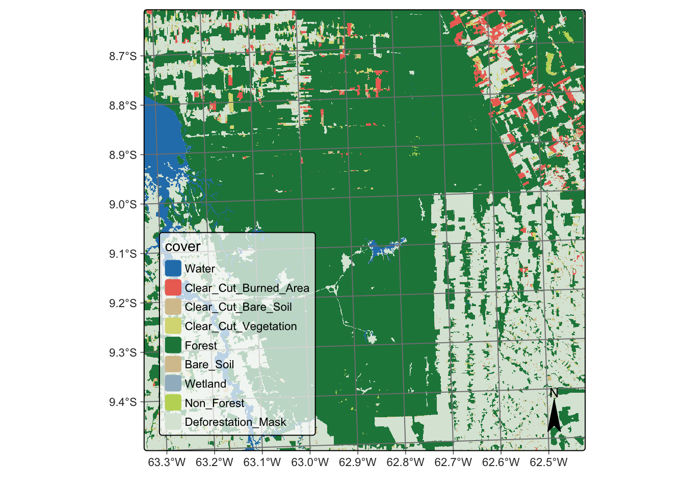

# load packages "torch" and "luz"
library(torch)
library(luz)
torch::install_torch()
# load packages "sits" and "sitsdata"
library(sits)
library(sitsdata)
# set tempdir if it does not exist
tempdir_r <- "~/sitsbook/tempdir/R/cl_reclassification"
dir.create(tempdir_r, showWarnings = FALSE)17 Map reclassification
Configurations to run this chapter
17.1 Introduction
Reclassification of a remote sensing map refers to changing the classes assigned to different pixels in the image. The purpose of reclassification is to modify the information contained in the image to better suit a specific use case. In sits, reclassification involves assigning new classes to pixels based on additional information from a reference map. Users define rules according to the desired outcome. These rules are then applied to the classified map to produce a new map with updated classes.
17.2 Reclassifying a deforestation map
To illustrate the reclassification in sits, we take a classified data cube stored in the sitsdata package. As discussed in Chapter Data cubes from local files, sits can create a data cube from a classified image file. Users need to provide the original data source and collection, the directory where data is stored (data_dir), the information on how to retrieve data cube parameters from file names (parse_info), and the labels used in the classification.

The above map shows the total extent of deforestation by clear cuts estimated by the sits random forest algorithm in an area in Rondonia, Brazil, based on a time series of Sentinel-2 images for the period 2020-06-04 to 2021-08-26. Suppose we want to estimate the deforestation that occurred from June 2020 to August 2021. We need a reference map containing information on forest cuts before 2020.
In this example, we use as a reference the PRODES deforestation map of Amazonia created by Brazil’s National Institute for Space Research (INPE). This map is produced by visual interpretation. PRODES measures deforestation every year, starting from August of one year to July of the following year. It contains classes that represent the natural world (Forest, Water, NonForest, and NonForest2) and classes that capture the yearly deforestation increments. These classes are named “dYYYY” and “rYYYY”; the first refers to deforestation in a given year (e.g., “d2008” for deforestation for August 2007 to July 2008); the second to places where the satellite data is not sufficient to determine the land class (e.g., “r2010” for 2010). This map is available on package sitsdata, as shown below.
# Set the directory for PRODES data
data_dir <- system.file("extdata/PRODES", package = "sitsdata")
# Recover the PRODES classified cube
prodes_2021 <- sits_cube(
source = "USGS",
collection = "LANDSAT-C2L2-SR",
data_dir = data_dir,
parse_info = c("product", "sensor",
"tile", "start_date", "end_date",
"band", "version"),
bands = "class",
version = "v20220606",
labels = c("1" = "Forest", "2" = "Water", "3" = "NonForest",
"4" = "NonForest2", "6" = "d2007", "7" = "d2008",
"8" = "d2009", "9" = "d2010", "10" = "d2011",
"11" = "d2012", "12" = "d2013", "13" = "d2014",
"14" = "d2015", "15" = "d2016", "16" = "d2017",
"17" = "d2018", "18" = "r2010", "19" = "r2011",
"20" = "r2012", "21" = "r2013", "22" = "r2014",
"23" = "r2015", "24" = "r2016", "25" = "r2017",
"26" = "r2018", "27" = "d2019", "28" = "r2019",
"29" = "d2020", "31" = "r2020", "32" = "Clouds2021",
"33" = "d2021", "34" = "r2021")
)Since the labels of the deforestation map are specialized and are not part of the default sits color table, we define a legend for better visualization of the different deforestation classes.
# Use the RColorBrewer palette "YlOrBr" for the deforestation years
colors <- grDevices::hcl.colors(n = 15, palette = "YlOrBr")
# Define the legend for the deforestation map
def_legend <- c(
"Forest" = "forestgreen", "Water" = "dodgerblue3",
"NonForest" = "bisque2", "NonForest2" = "bisque2",
"d2007" = colors[1], "d2008" = colors[2],
"d2009" = colors[3], "d2010" = colors[4],
"d2011" = colors[5], "d2012" = colors[6],
"d2013" = colors[7], "d2014" = colors[8],
"d2015" = colors[9], "d2016" = colors[10],
"d2017" = colors[11], "d2018" = colors[12],
"d2019" = colors[13], "d2020" = colors[14],
"d2021" = colors[15], "r2010" = "lightcyan",
"r2011" = "lightcyan", "r2012"= "lightcyan",
"r2013" = "lightcyan", "r2014" = "lightcyan",
"r2015" = "lightcyan", "r2016" = "lightcyan",
"r2017" = "lightcyan", "r2018" = "lightcyan",
"r2019" = "lightcyan", "r2020" = "lightcyan",
"r2021" = "lightcyan", "Clouds2021" = "lightblue2")Using this new legend, we can visualize the PRODES deforestation map.
sits_view(prodes_2021, legend = def_legend)
Taking the PRODES map as our reference, we can include new labels in the classified map produced by sits using sits_reclassify(). The new class “Deforestation_Mask” will be applied to all pixels that PRODES considers that have been deforested before July 2020. We also include a Non_Forest class to include all pixels that PRODES takes as not covered by native vegetation, such as wetlands and rocky areas. The PRODES classes will be used as a mask over the sits deforestation map.
The sits_reclassify() operation requires the parameters: (a) cube, the classified data cube whose pixels will be reclassified; (b) mask, the reference data cube used as a mask; (c) rules, a named list. The names of the rules list will be the new label. Each new label is associated with a mask vector that includes the labels of the reference map that will be joined. sits_reclassify() then compares the original and reference map pixel by pixel. For each pixel of the reference map whose labels are in one of the rules, the algorithm relabels the original map. The result will be a reclassified map with the original labels plus the new labels that have been masked using the reference map.

The reclassified map has been split into deforestation before mid-2020 (using the PRODES map) and the areas classified by sits that are taken as being deforested from mid-2020 to mid-2021. This allows experts to measure how much deforestation occurred in this period according to sits and compare the result with the PRODES map.
17.3 Summary
In this chapter, we describe a useful operation that can be applied to classified maps. The sits_reclassify() function is not restricted to comparing deforestation maps. It can be used in any case that requires masking of a result based on a reference map.